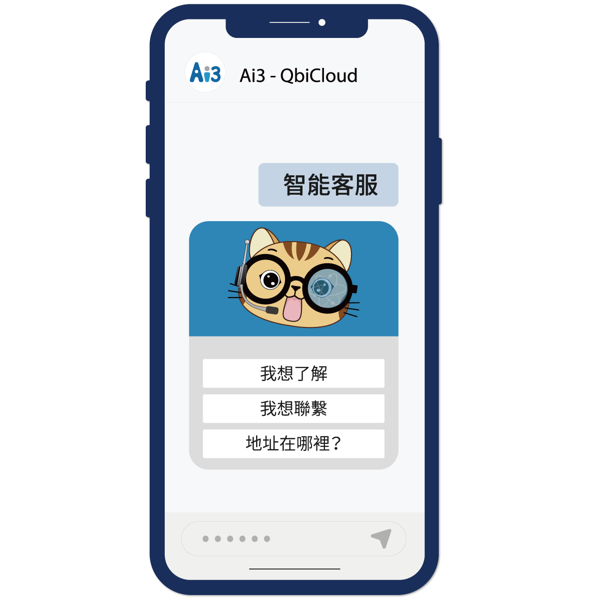
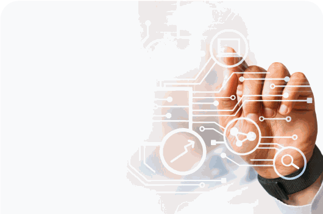
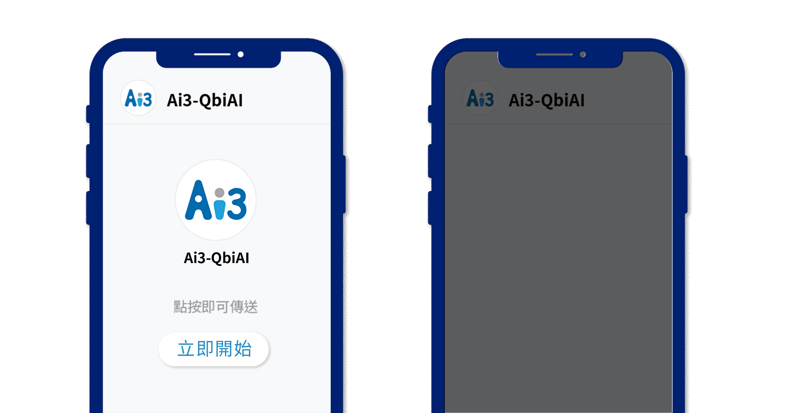

Qbi Bot 智能機器人
選單式與語意式兩種問答一次到位：ClickBot 把固定流程做成一鍵完成，NLUBot 聽懂自由提問、記住上下文，並把每一次互動變成數據。

兩種機器人，常見流程一鍵完成，自由提問也接得住。
ClickBot 負責把流程做成選單，NLUBot 負責聽懂人話；兩者共用同一套知識庫與 Qbi CRM 的客戶資料。

ClickBot 選單式機器人
階層選單、文字選單、卡片式回覆、檔案與圖文回覆，把申辦、查詢、預約這些固定流程做成一鍵完成。
NLUBot 語意式機器人
意圖辨識、多輪對話與上下文保留，回答自由提問；每一次互動都留下資料，供流量與客戶行為分析。
核心技術
自有 AI 研發，深度學習與自然語言處理，問答知識庫特徵學習。

意圖理解與 NLP 引擎
跨領域對話、多輪對話與上下文保留。
互動數據分析
完整互動資料與客戶行為分析，看得見流量從哪裡來。
精準問答投遞
解析文字問答知識庫，把正確答案送到對的人面前。
Ai3 獨家優勢
一站式模組化架構、全通路同步、AI 先接手、自有訓練。
一站式模組化架構
快速部署，模組依需求增減。
全通路設定同步
LINE、Messenger 與網頁共用一套設定，體驗一致。
AI 先接手
常見問題由機器人回答，真人只處理部分服務。
自有 AI 訓練
特徵學習與問答知識庫，回答貼近企業語彙。

公部門與指標企業首選
用 Qbi Bot 的客戶，點進去看每一案怎麼做。

台北富邦銀行金融保險 · Qbi Bot
智能客服「邦妮」，回答準確率九成
90%回答準確率
24h全天候服務

黑貓宅急便交通運輸 · Qbi Bot
第一個導入智慧服務的物流業
24h自助查件
2017導入至今

衛福部健保署公部門 · Qbi Bot
智能客服「阿Ken」，疫情期間接住近 30 萬通諮詢
30萬通專線進線
3個通路同步

桃園市政府公部門 · Qbi Bot
1999 市民諮詢熱線的市政小助理「ㄚ桃」
1999市民熱線

高雄市政府公部門 · Qbi Bot
1999 服務專線的「AI 萬事通」
1999服務專線

兆豐銀行金融保險 · Qbi Bot
智能客服「小咩」，九成客戶自助完成
90%智能客服自助
10%轉真人

中國信託金融保險 · Qbi Bot
數位客服「小C」，300 萬用戶的金融助理
2,000+專業知識點
300萬用戶

綠界科技金融保險 · Qbi Bot
金流市佔第一，40 萬會員的 AI 客服
40萬會員
台北富邦銀行金融保險 · Qbi Bot
法遵小博士：AI 自動化金融監督管理
法遵內外規檢索

中華大學教育與其他 · Qbi Bot
會認人的實體迎賓機器人
實體互動機器人
基隆
基隆市消防局教育與其他 · Qbi Bot
台灣首創的 AI 防災機器人
首創社群防災機器人
華南
華南產險金融保險 · Qbi Bot
形象機器人「智能GOGO」
網路投保即時諮詢
想讓你的客服也會說話？
留下需求，顧問會在一個工作天內回覆，帶你評估雲端訂閱或專案客製哪一種比較適合。